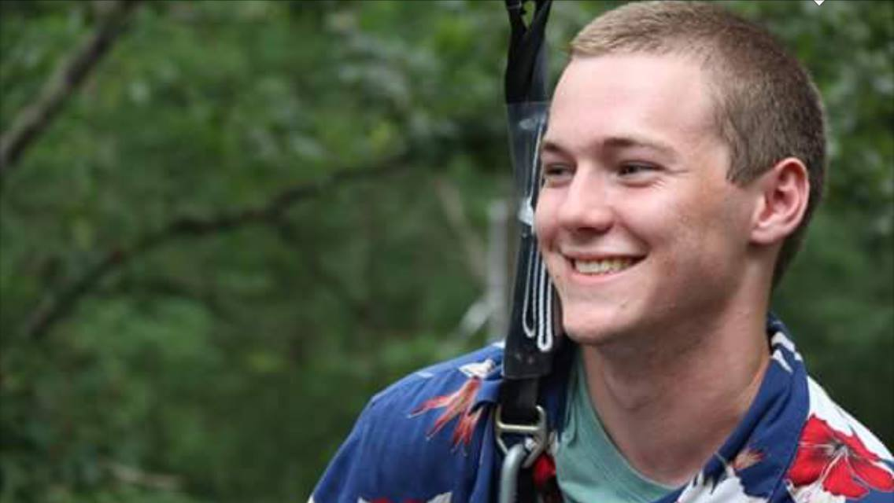
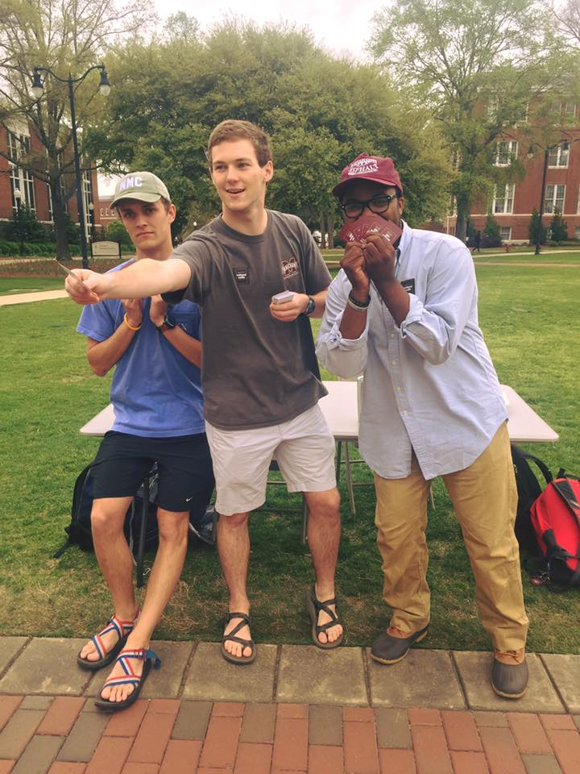
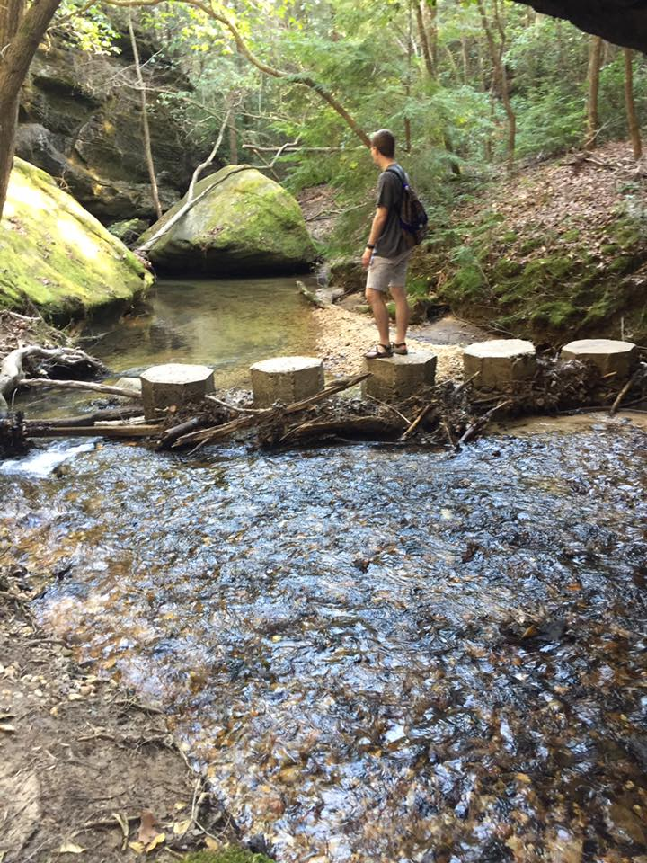
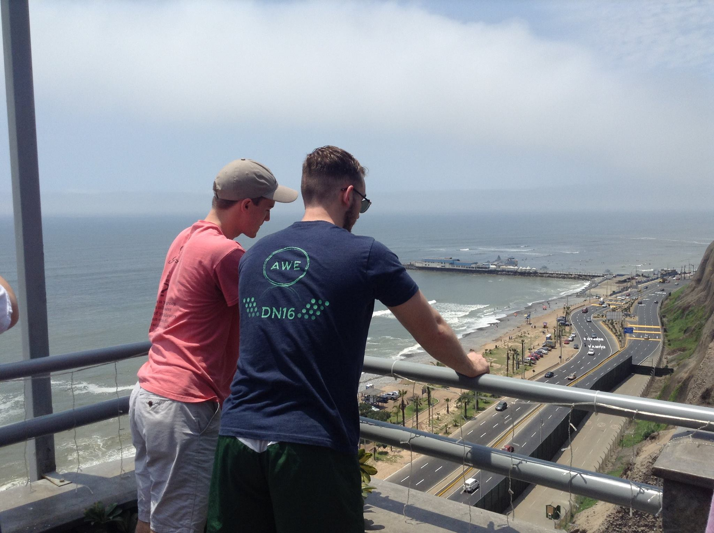

Michael Poole
Home
About Me
Resume
Capstone
Contact
A Brief Synopsis of Michael Poole:
My name is Michael Poole, and I am currently enrolled as an undergraduate as Mississippi State University. I am studying Computer Science, and have always had a passion for computers. My grandfather was an electrical engineer, and throughout my childhood he would show me various neat tricks you could do with a computer. Seeing those unknown possibilities at such a young age opened my mind to the wonderful things I could do, and really gave me a passion for learning in general.
I have always been good at math, but at the same time have had quite the creative side. This has very much led me to choose and enjoy Computer Science as my major, as I get to think critically, as math asks you to do, but also don't have to stick to the formula. Computer programming gives me the ability to improvise, and truly think out the best way to solve a problem, rather than simply looking up the formula and going from there. Throughout my schooling and work so far I have completed many projects in Python, C#, and C++. My areas of focus have been database management and front-end development, both of which I love. I have done full stack development for a C# windows app as well as quite a bit of web development, using HTML, javascript, PHP, and the likes.


Outside of programming, I have kept myself quite busy with student involvement throughout my time at Mississippi State. While I was in highschool, I never thought of myself as a student leader, and never had the intention or desire to be one. Ever since Freshman year at Mississippi State, this notion has changed drastically. My Freshman year, I got dragged into the Freshman branch of the Student Association, and haven't been able to shake it yet. The next year I became leader of that same Freshman Council, and began looking for other avenues to get involved. I found Montgomery Leadership Program, Cru on-campus ministry, and the TEDx Student Organization among other organizations to become a part of and to help make a difference on campus through. And ultimately, that is what it is all about for me - making a difference! I used to believe that individuals did not have enough in them to make a difference on their own. What I failed to realize, however, is how inspiring individuals can be, and how many people around the community are willing to help out a good cause.
I would consider myself to have an adventurous personality. I enjoy experiencing new things, and don't like to get stuck in the same routine. This also means that I thrive off of challenges, and being presented with the opportunity to learn new ideas and skill sets. I believe that this has led me to have quite an eclectic array of influences in my life. I try to see things and learn different viewpoints from all kinds of different people. This allows me to keep from getting stuck in my ways and continue to grow and develop to be the best I can be. The desire for adventure has also led me to travel quite a bit throughout college. I have visited everywhere from the rain forests of Panama and the mountains of Peru to the scenery and studios of California. I am quite an independent person, and have been described as one of the most extroverted introverts you could ever meet. I believe this personality and willingness to learn from others helps me thrive in whatever situation in which I might be placed.

